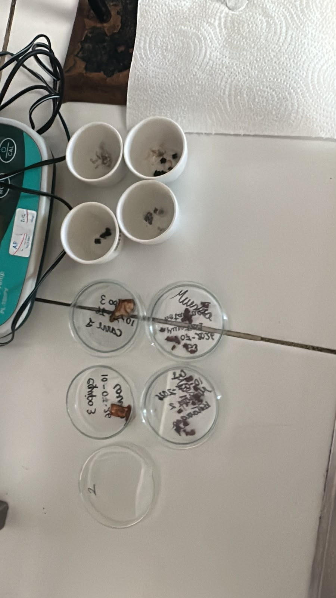
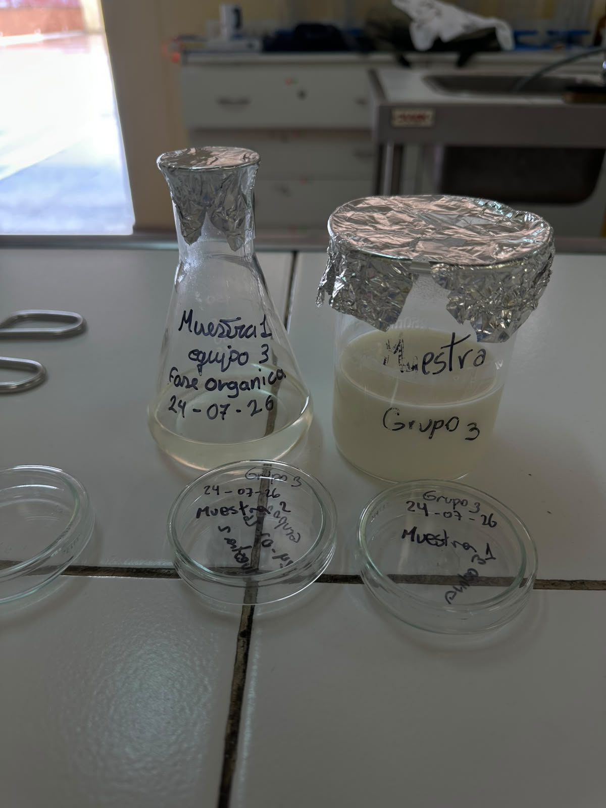
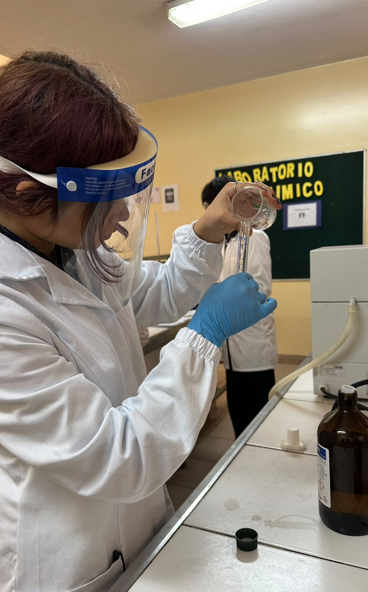
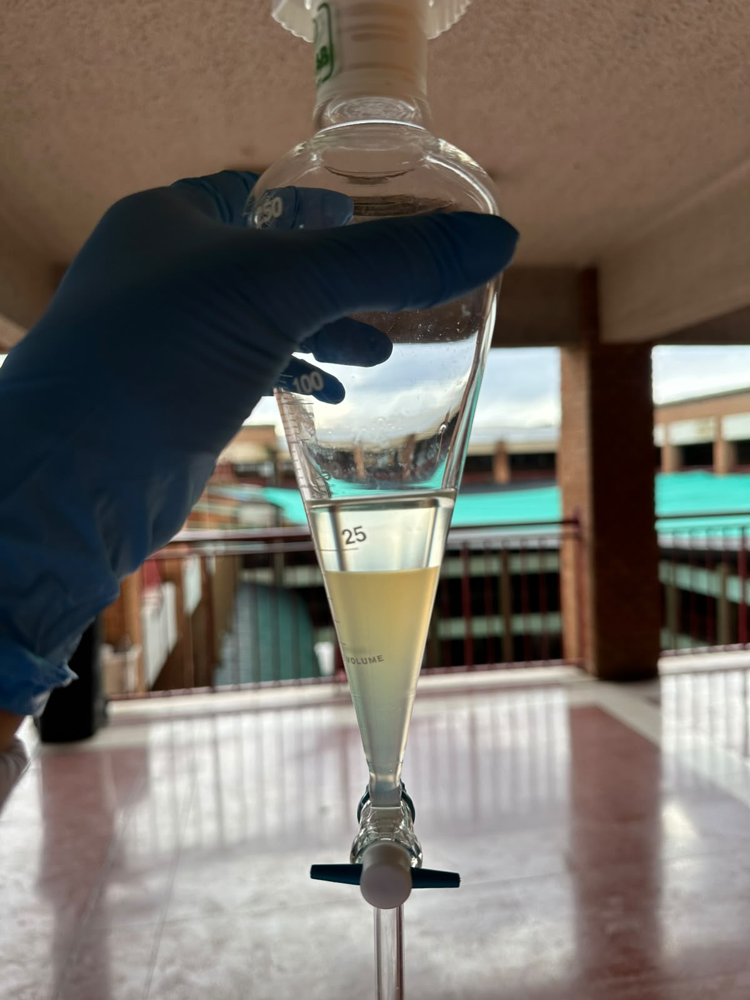
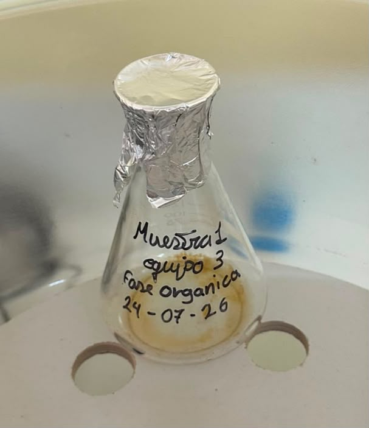

Objetivo
Determinar el porcentaje de materia grasa de una muestra de alimento líquido con contenido graso (leche), mediante extracción líquido-líquido con solventes orgánicos, como parte de su caracterización nutricional y control de calidad.
Fundamento
En un alimento líquido, la grasa forma una emulsión estable con las proteínas, por lo que no puede extraerse directamente con un solvente. Se agrega etanol a la muestra para romper esta emulsión y liberar la grasa. Luego, en un embudo de decantación, se añade una mezcla de éter etílico y éter de petróleo, que disuelve selectivamente la grasa y forma una fase orgánica que se separa de la fase acuosa. La fase orgánica se recolecta, se evapora el solvente y la grasa remanente se cuantifica por diferencia de masa. Es un método gravimétrico del tipo Röse-Gottlieb, ampliamente usado en el análisis proximal de alimentos líquidos.
Materiales y equipos
- Cápsulas de porcelana y placas Petri (muestreo y análisis preliminar)
- Matraces Erlenmeyer y embudo de decantación
- Etanol, éter etílico y éter de petróleo
- Balón de fondo redondo y manto calefactor
- Balanza (semi)analítica
- EPP (delantal, guantes, careta o lentes; trabajo bajo campana)
Procedimiento
- Rotular y disponer la muestra líquida en cápsulas de porcelana y placas Petri para el análisis preliminar.
- Agregar etanol a la muestra para romper la emulsión grasa-proteína.
- Transferir la mezcla al embudo de decantación y añadir éter etílico y éter de petróleo.
- Agitar, liberar presión y dejar reposar hasta la separación de la fase acuosa y la fase orgánica.
- Recolectar la fase orgánica (con la grasa disuelta) en un matraz Erlenmeyer, descartando la fase acuosa.
- Evaporar el solvente de la fase orgánica en un balón de fondo redondo sobre manto calefactor.
- Enfriar, pesar el balón con la grasa remanente en balanza (semi)analítica y calcular el % de grasa por diferencia de masa.
Cálculo
Resultados
| Muestra | Masa muestra (g) | Masa grasa (g) | % Grasa |
|---|---|---|---|
| Muestra 1 (ejemplo) | 2,500 | 0,300 | 12,0 % |
| Muestra 2 (ejemplo) | 2,480 | 0,295 | 11,9 % |
Guía de trabajo
Documento de contenidos del análisis de grasas:
📄 Contenidos — Análisis de grasas
Evidencia fotográfica







Conclusión
El contenido de materia grasa obtenido es consistente entre réplicas, lo que refleja una correcta ejecución de la técnica y permite evaluar la conformidad del producto en este parámetro.
← Análisis anterior: % Cenizas · Siguiente análisis: Cromatografía →